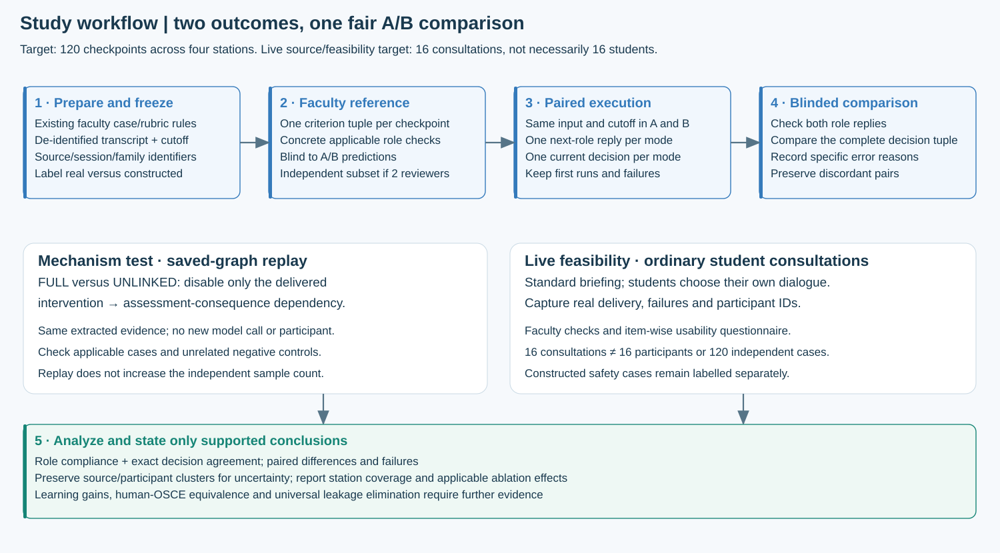

Testing paired role control and assessment
Four stations · 120 target paired checkpoints · 16 target live consultations · 1–2 faculty reviewers
Primary outcomes are first-run role compliance and exact assessment-decision agreement. This protocol is a design, not a completed experiment.
How the study proceeds

Published methods guide the design, not a copied sample size
The new attachment adds two especially useful validation precedents. Zhang et al. compare VSP scores with human references in a human–machine collaborative examination; the human SP still conducts the dialogue. [R41·2] Song et al. compare clinical retrieval approaches using independent clinician judgements and paired statistical tests. [R42·2] [R42·3] Their tasks and sample sizes are not adopted as automatic minimums for pharmacy OSCE.
| Design choice | Literature basis | Our implementation |
|---|---|---|
| Same-input component comparison | IEEE education graph-context comparison [R27·1] | Freeze the same station, knowledge and dialogue cutoff for A and B. |
| Independent expert reference | Expert-reference assessment work [R29·3]; MedSimAI [R34·3] | Annotate raw dialogue before exposing system decisions; blind-label the role outputs. |
| Targeted component ablation | IEEE multi-agent/KG studies [R30·3] [R31·2] | Disable one typed intervention-to-consequence dependency on the same extracted graph. |
| Validity and scope | Cook and Hatala [R17·1]; IEEE scholarship guidance [R26·1] | Report decision reliability and feasibility; do not infer learning gains. |
| Sample rationale | Lakens [R18·2]; power-analysis principles [R25·1] | State discordance assumptions, independence/cluster limits and precision; no universal minimum. |
Detailed IEEE study designs and original passages · Additional clinical KG and virtual-patient validation methods
Two modes, with the common components held fixed
| A · Conventional + RAG | B · DualGraph-OSCE |
|---|---|
| Role LLM reads approved case/role policy, retrieved knowledge and the complete preceding dialogue. After the encounter, an independent assessment call reads the full transcript, rubric and the same knowledge. | Semantic evidence agent updates E; frozen R and session state determine role permissions and criterion state. The role response is audited before delivery; final grading replays confirmed rules. |
| Keep delivered prompts, original-utterance evidence, normal output guards and existing station-specific safety rules. | Add qualified shared evidence conditions and explicit propagation of real role interventions into assessment effects. |
Fix case version, approved knowledge snapshot, retrieval configuration, model identities/parameters, ASR/TTS and available delivery records. Keep private marking answers out of the student-facing generator in both modes. Record extra calls, retries, tokens and time; they need not be numerically identical when the algorithm changes.
Formal checkpoint task: both modes receive the same prefix at the same cutoff. Each produces the next role reply and the current decision for one preselected criterion. The newly generated reply is not appended to the primary assessment input. For this technical task, A’s ordinary assessment prompt is adapted to the same cutoff, open-deadline semantics, target criterion and output schema, without loading B’s graph executor. End-of-encounter checkpoints close the relevant deadline; mid-dialogue checkpoints preserve PENDING where appropriate. Live consultations provide a separate closed-loop check.
What the 120 checkpoints contain
A checkpoint is a frozen dialogue history ending at a prespecified decision point. It is not necessarily a whole consultation or a new person. Thirty checkpoints per station give balanced technical coverage. Every record has a source consultation or constructed-script-family ID.
| Station | Provenance / eligibility | Prompts / disclosure | Drug / patient bindings | Timing / corrections |
|---|---|---|---|---|
| C1 Onychomycosis | Student explanation versus doctor-supplied clue | Authorized, repeated, undelivered or unauthorized intervention | Suitability and interaction risks remain distinct | Completed before prompting; corrected or unresolved recommendation |
| C2 Migraine | Adopted recommendation versus hypothetical mention | Designated clue versus ordinary clarification | Dose and contraindication bound to selected treatment | Allergy inquiry before/after first actual recommendation |
| C3 Diuretics | Patient echo versus student counselling | Ordinary patient follow-up without invented penalty | Rosuvastatin and frusemide instructions not merged | Omission later supplied; current regimen updated |
| C4 MTX | Patient confirmation versus student instruction | Role knowledge before/after instruction | MTX and folic-acid schedules separated | Daily-to-weekly correction; historical error retained |
Use a target allocation of 8 provenance, 8 prompt, 7 binding and 7 timing/correction checkpoints per station, giving 30. These are dominant design strata; a checkpoint may exercise more than one mechanism. Balance is a study convention, not a published threshold.
The target 16 live consultations can supply natural decision points, but may not contain every safety-critical condition. Fill missing strata with explicitly labelled controlled scripts derived from the approved cases. Never claim all 120 are authentic recorded student actions if some are constructed. Do not turn paraphrases or repeated cutoffs from one source into independent participants.
One frozen checkpoint card
- Anonymous checkpoint, participant/session and script-family IDs; real or constructed origin.
- Station, case/rule/knowledge versions; immutable dialogue and exact cutoff span.
- Preselected criterion; applicable role checks; allowed, required and forbidden behaviour.
- Faculty reference tuple: status, applicable effects, correction state and review reasons, with original evidence spans.
- Approval status and source references. Resolve policy ambiguity before test freeze.
- Input hash, execution order and first-run identifiers; keep failures and retries.
Four core items per station
| Station | Role / task | Core requirements | Important condition |
|---|---|---|---|
| C1 · Onychomycosis | AI doctor; student provides drug information | Heart-failure-related suitability (F05); itraconazole–atorvastatin interaction (F06); alternative (F07); approved dose/course (F08). | Prompt-dependent consequences and separate safety conditions. |
| C2 · Migraine | AI doctor; student discusses treatment | Allergy inquiry (M04); patient-specific contraindication (M07); alternative (M09); instructions for the selected medicine (M10). | Inquiry before the first adopted recommendation; medicine/regimen binding. |
| C3 · Diuretics | AI patient; student provides counselling | Allergy inquiry (D02); rosuvastatin instructions (D04); frusemide instructions (D08); heart-failure/self-care explanation (D18). | Keep the two medicines distinct. Ordinary patient questions do not create an invented prompt penalty. |
| C4 · Methotrexate | AI patient; student counsels on MTX and folic acid | Weekly MTX frequency (T05); missed-dose handling (T06); separate folic-acid schedule (T08); no double-dose advice (T14). | Distinguish omission from a real wrong recommendation, patient echo from student evidence, and corrected from unresolved errors. |
This validates selected decisions, not every item in the full rubric. Use the 120-row checkpoint planning sheet and the reference-label template.
Disable one link, not the evidence or the whole system
Save the validated Evidence Graph from the full B run. Replay it first with all links enabled, then with only delivered role intervention → assessment consequence dependencies disabled. No new LLM extraction and no new student are needed. The original events, source qualification, medication bindings, corrections and role permissions remain unchanged.
Example: a delivered authorized interaction prompt is followed by a correct student explanation. FULL records completion with its approved C+ cap. UNLINKED still recognizes the explanation but should lose the cap attributable to that link. An unplayed draft or a normal patient question is a negative control: disabling this link should not invent a penalty or change unrelated decisions.
Evaluate the prespecified applicable subset separately from non-applicable controls. Report which relations were disabled and whether unrelated fields remained equal. This ablation identifies one mechanism; it does not isolate every possible benefit of graph extraction or more computation. Interactive explanation.
Faculty tasks: apply the existing standard to new evidence
Faculty need not invent a new rubric or approve the same established rule again. The research assistant prepares the station references, candidate checkpoints and fillable forms. The faculty reviewer checks whether each proposed reference correctly applies the existing material to that particular dialogue.
- Review a small development set excluded from formal evaluation, clarifying ambiguous prompt/omission/correction labels.
- Annotate the raw checkpoint reference without seeing either system’s prediction.
- Review anonymized A/B role replies in randomized order; record each applicable check and a specific reason/span for any violation.
- If a second faculty member is available, independently review a prespecified stratified subset before discussion. Keep both initial annotations and adjudication.
- Record unresolved disagreements and review time; do not allow the engine’s trace to substitute for independent clinical judgement.
For 120 checkpoints, one reference is prepared per input and 240 next-role replies need review. Budget the time from a timed development batch rather than promising that a few minutes of faculty participation will provide all gold labels. With only one reviewer, describe the standard as a single-faculty reference; do not report nonexistent inter-rater reliability. Faculty guide and directly fillable forms.
Students complete normal consultations, not test scripts
Provide the same concise task briefing, time allowance, case information, audio check and instructions in both modes. Students act as pharmacy trainees and choose their own questions and explanations. Do not provide model answers or tell them to reproduce a diagnostic script. The frozen benchmark scripts are a separate technical test.
The target is 16 consultations, not automatically 16 participants. For example, 8 students completing 2 different stations each yields 16 consultations, but only 8 participant clusters. Record the actual allocation and counterbalance station/mode order where feasible. Different cases completed in different modes do not themselves provide a same-case causal comparison; the frozen A/B replay is the principal technical comparison.
Use neutral labels or no mode label on the shared frontend. Backend assignment is frozen when the session is created. Preserve all attempted sessions and report incomplete encounters, technical interruptions and exclusions. Student briefing.
Forms and questionnaires have different jobs
Faculty role form: five role-check categories, applicability, pass/fail/uncertain and a reason/span beside each problem. Faculty decision form: the four comparison fields plus evidence and rule reference. Student questionnaire: usability and perceived role coherence, with a five-point response and “cannot judge”; record concrete problematic utterances separately.
The questionnaire does not establish rubric accuracy. Analyze individual items and open comments; do not present a custom five-item sum as a validated psychometric scale. Students should not rate unseen grading quality before receiving feedback. Editable questionnaire · Faculty forms.
Role outcome: one checkpoint passes only if all its checks pass
Valid finalized role response AND all frozen applicable role checks pass gives 1; any violation or invalid output gives 0. Do not average the number of passed checks. Denominator: every formal checkpoint attempted. The five categories, examples and exceptions.
Assessment outcome: compare the complete tuple
Valid output AND exact agreement on requirement status, all applicable consequences, correction state and review reasons gives 1; otherwise 0. A correctly recognized student error counts as agreement. At mid-dialogue, an open requirement may be PENDING, not NOT_MET. Field definitions and interactive calculation.
Why 120 is a target, not a guarantee of statistical success
Imagine 100 independent checkpoints: B alone succeeds in 20, A alone succeeds in 5, and both agree on the other 75. Only the 25 disagreements tell us which method is better; the expected advantage is 15 percentage points. If the real advantage is much smaller, more independent inputs are needed.
An earlier independent-pair planning model used those 20%/5% discordance assumptions and a two-sided 0.025 level for each of two primary outcomes. That model placed roughly 108 independent pairs near 80% power. Allocating 120 across four stations adds a modest margin. These are hypothetical inputs, not measured improvement, not a requirement from IEEE and not a guarantee for each station.
Important change for this design: 120 prefixes derived from 16 consultations are not 120 independent pairs. The independent-pair calculation cannot establish power for that clustered set. Preserve source consultation, student and constructed-family IDs; use clustered uncertainty and call the result a pilot technical validation if the independent-source count is small. A confirmatory superiority claim requires a new cluster-aware power calculation based on defensible pilot estimates. [R18·2] [R19·1]
Do not manufacture independence by paraphrasing an input. Expand independent source encounters or genuine script families when possible. Otherwise emphasize measured effect sizes, uncertainty and case coverage rather than a binary promise of significance.
What the platform must record
| Record | Minimum fields |
|---|---|
| Session / source | Anonymous participant, session, station, source-family IDs; real/constructed label; frozen mode and case/rule/knowledge/model versions. |
| Dialogue / delivery | Original and corrected transcript versions, speaker, turn/span/time, audio pointer, draft versus actual delivered range, prompt ID and delivery uncertainty. |
| Evidence / decision | Event source, medicine/patient/regimen, action/stance, correction relations, applicable rule IDs, state revision, tuple, trace and review reasons. |
| Execution / annotation | Input hashes, first-run ID, calls/tokens/retries/failures; blinded reviewer, initial and adjudicated labels, reason spans and annotation time. |
Raw identifiable audio stays within the institution’s approved consent and access arrangements. A reproducible research export can use de-identified spans and event IDs.
How to turn the forms into results
- Compute the two 0/1 results per system per checkpoint using the frozen applicability card and faculty reference.
- Report A and B success counts, rates and B−A percentage-point differences, with the attempted denominator and failures.
- Create the paired table: both pass, A-only pass, B-only pass, neither passes. Show the discordant counts, not just two percentages.
- If inputs are genuinely independent, use a two-sided exact McNemar test and correct for the two primary outcomes. In the clustered design, resample complete source/participant clusters for paired difference intervals; preserve the A/B pair. Very few clusters give imprecise intervals and weak confirmatory evidence.
- For source families nested within students, use the highest relevant independent unit. Report cluster count and checkpoint distribution. Do not resample individual prefixes as independent observations.
- Report station-level descriptive rates and error categories. Pooled significance does not prove superiority in each station.
- Compare FULL and UNLINKED on the prespecified applicable subset and verify the negative controls. These replays do not add independent n.
- Report faculty agreement before adjudication on the independently rated subset; use the actual scale/field, not an ICC borrowed for binary labels.
Zero observed leaks means 0 leaks in the tested eligible outputs, with an uncertainty interval. It does not mean leakage has been eliminated for all future interactions. Perfect agreement on a selected tuple does not establish perfection for the entire rubric.
Preparation, collection and review are separate work
Before collection: freeze cases and versions, test logging, obtain the required consent, pilot the forms and checkpoint definitions. During live use: provide a standard briefing, run the assigned backend mode, preserve actual delivery and collect the questionnaire. Afterwards: de-identify, select checkpoints under the prespecified sampling rule, obtain faculty labels, freeze the test set and run paired replay and ablation. Never tune on the final test set and re-report it as independent validation.
What the eventual conclusion can say
With a demonstrated paired improvement and suitable uncertainty, conclude that DualGraph-OSCE improved defined role compliance and faculty-referenced decisions in the tested stations. If intervals remain wide, report promising pilot results and the unresolved estimate. If only explanatory traces improve, report auditability rather than accuracy superiority.
Live user feedback supports feasibility. It does not prove learning gain, clinical deployment safety, equivalence to human actors or validity for high-stakes certification. Those require additional designs and evidence.
Context length is a diagnostic, not the main explanation
Record actual requests and provider usage. Compare relevant-evidence coverage as well as token counts; shorter inputs can omit essential conditions. Historical offline counts are retained in the context audit. They are not new benchmark results or proof of exceeding a model window.
Study materials
120-checkpoint planning sheet · Faculty reference template · Protocol metadata · Paired outcome template · Cluster-aware analysis utility · Faculty guide · Student guide · Questionnaire